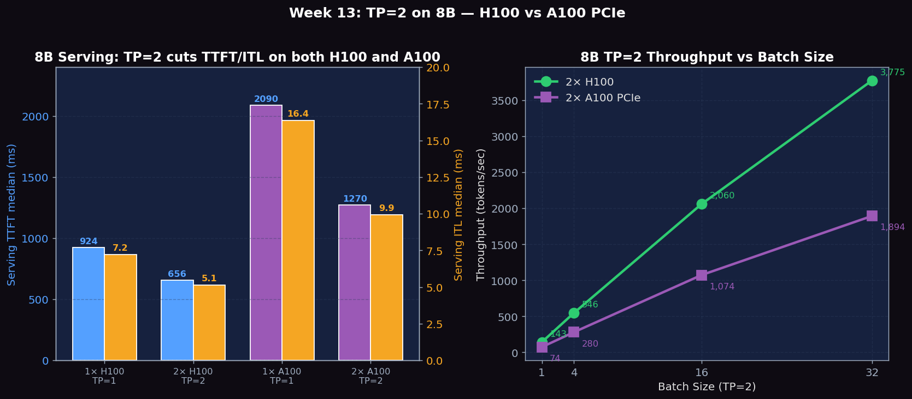
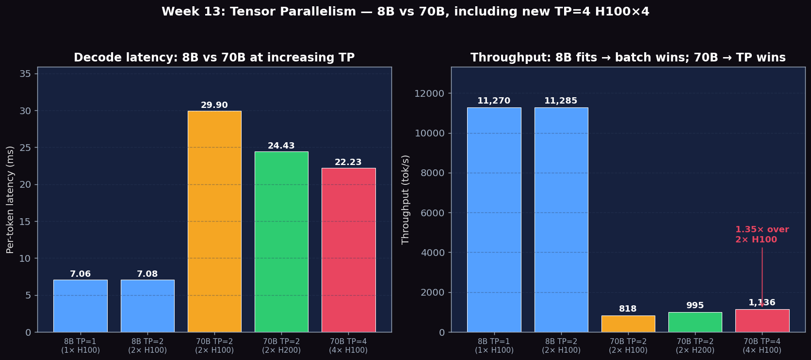

Split weight matrices across GPUs, measure TP=1 vs TP=2 latency and throughput, profile NCCL all-reduce overhead with NVLink
# Verify 2× H100 GPUs are visible
nvidia-smi --query-gpu=index,name,memory.total --format=csv,noheader
# Check NVLink connectivity
nvidia-smi topo -m
# Confirm vLLM installation supports multi-GPU
python -c "import vllm; print(vllm.__version__)"
# Download model weights (if not cached)
python -c "from huggingface_hub import snapshot_download; snapshot_download('meta-llama/Llama-3.1-8B-Instruct')"Measure per-token decode latency at batch size 1 to isolate the latency reduction from TP=2:
for tp in 1 2; do
python benchmarks/benchmark_latency.py \
--model meta-llama/Llama-3.1-8B-Instruct \
--tensor-parallel-size $tp \
--batch-size 1 \
--input-len 512 \
--output-len 128 \
--num-iters 20 \
2>&1 | tee results_tp${tp}_bs1_latency.txt
done
# Also test input-heavy (prefill-bound) workload
for tp in 1 2; do
python benchmarks/benchmark_latency.py \
--model meta-llama/Llama-3.1-8B-Instruct \
--tensor-parallel-size $tp \
--batch-size 1 \
--input-len 2048 \
--output-len 32 \
--num-iters 10 \
2>&1 | tee results_tp${tp}_prefill_latency.txt
doneRun serving benchmarks at fixed request rate to compare end-to-end TTFT and throughput:
# Start TP=1 server
vllm serve meta-llama/Llama-3.1-8B-Instruct \
--tensor-parallel-size 1 \
--port 8000 \
--disable-log-requests &
sleep 30
python benchmarks/benchmark_serving.py \
--backend vllm \
--model meta-llama/Llama-3.1-8B-Instruct \
--dataset-name sharegpt \
--dataset-path ShareGPT_V3_unfiltered_cleaned_split.json \
--num-prompts 200 --request-rate 4 \
--port 8000 \
2>&1 | tee results_serving_tp1.txt
kill %1; sleep 10
# Start TP=2 server
vllm serve meta-llama/Llama-3.1-8B-Instruct \
--tensor-parallel-size 2 \
--port 8001 \
--disable-log-requests &
sleep 30
python benchmarks/benchmark_serving.py \
--backend vllm \
--model meta-llama/Llama-3.1-8B-Instruct \
--dataset-name sharegpt \
--dataset-path ShareGPT_V3_unfiltered_cleaned_split.json \
--num-prompts 200 --request-rate 4 \
--port 8001 \
2>&1 | tee results_serving_tp2.txt
kill %1Find the crossover batch size where TP=2 throughput exceeds TP=1. At small batch sizes TP=2 wins on latency; at large batch sizes the compute is large enough that communication overhead is proportionally smaller:
for bs in 1 4 8 16 32 64; do
for tp in 1 2; do
python benchmarks/benchmark_throughput.py \
--model meta-llama/Llama-3.1-8B-Instruct \
--tensor-parallel-size $tp \
--batch-size $bs \
--input-len 512 \
--output-len 128 \
--num-iters 5 \
2>&1 | tee results_tp${tp}_bs${bs}_throughput.txt
done
doneProfile the all-reduce operations per decode step to measure communication overhead:
nsys profile \
-o tp2_trace \
--trace=cuda,nvtx,nccl \
--capture-range=cudaProfilerApi \
python benchmarks/benchmark_latency.py \
--model meta-llama/Llama-3.1-8B-Instruct \
--tensor-parallel-size 2 \
--batch-size 1 \
--input-len 256 \
--output-len 32 \
--num-iters 3
# Open in nsys GUI: nsys-ui tp2_trace.nsys-rep
# Look for: ncclAllReduce kernel launches
# Count: number of all-reduces per decode step (should be 2× num_layers)
# Measure: duration of each all-reduce eventIn the nsys timeline, each decode step should show 2 NCCL all-reduce calls per transformer layer (after attention output projection and after MLP down projection). For Llama-3.1-8B with 32 layers, expect 64 all-reduces per decode step.
Estimate actual NVLink bandwidth used during TP=2 all-reduce operations. For an all-reduce on a vector of size N tokens × hidden_size × 2 bytes (BF16), the data transferred is 2×(N × 4096 × 2) bytes at TP=2:
# Monitor NVLink bandwidth while benchmark runs
nvidia-smi nvlink --status -i 0 &
nvidia-smi dmon -s u -d 1 &
python benchmarks/benchmark_latency.py \
--model meta-llama/Llama-3.1-8B-Instruct \
--tensor-parallel-size 2 \
--batch-size 1 \
--input-len 512 --output-len 64 --num-iters 10Experiments run on four PACE Phoenix configurations: 2× NVIDIA H100 80GB HBM3 (NVLink), 2× NVIDIA H200 141GB HBM3e (NVLink), 4× NVIDIA H100 80GB HBM3 (full NVLink mesh), and 2× NVIDIA A100 80GB PCIe (NVLink bridge). Models: Llama-3.1-8B-Instruct (small-model TP control, all configs) and Llama-3.1-70B-Instruct (REQUIRES TP, H100/H200 configs). Both BF16.
| GPU + Config | Offline Throughput (req/s) | Serving TTFT median (ms) | Serving ITL median (ms) | Speedup vs same GPU TP=1 |
|---|---|---|---|---|
| 1× H100 TP=1 | 88.45 | 923.94 | 7.22 | 1.00× (baseline) |
| 2× H100 TP=2 | 88.57 | 656.14 | 5.13 | offline 1.00×; serving TTFT −29%, ITL −29% |
| 1× A100 TP=1 | 36.97 | 2089.66 | 16.35 | 1.00× (baseline) |
| 2× A100 TP=2 | 36.81 | 1270.29 | 9.93 | offline 1.00×; serving TTFT −39%, ITL −39% |
Both H100 and A100 show the same pattern at 8B: offline throughput is unchanged (model fits on one GPU, no extra HBM bandwidth unlocked) but serving latency drops significantly because TP=2 halves the per-step GEMM tile size. A100 PCIe wins more (-39%) than H100 (-29%) because A100's slower memory bus makes the per-step GEMM a proportionally bigger share of step time, so halving it has a larger effect.
| Batch Size | 2× H100 Latency (ms) | 2× H100 Throughput (tok/s) | 2× A100 Latency (ms) | 2× A100 Throughput (tok/s) |
|---|---|---|---|---|
| 1 | 448.7 | 143 | 870.7 | 74 |
| 4 | 468.8 | 546 | 913.8 | 280 |
| 16 | 497.0 | 2,060 | 953.1 | 1,074 |
| 32 | 542.5 | 3,775 | 1,081.2 | 1,894 |
A100 latency is roughly 1.94× H100 across all batch sizes — close to the H100/A100 HBM bandwidth ratio (3.35 / 1.935 ≈ 1.73), plus a small extra penalty for slower NVLink-bridge all-reduce vs full NVLink. The shape (latency growing only modestly with batch size) is identical on both hardware classes — confirming the memory-bandwidth-bound decode regime is GPU-architecture-independent at 8B scale.

Figure 1: Left — 8B serving TTFT and ITL on 1× vs 2× H100 and 1× vs 2× A100. TP=2 cuts TTFT and ITL on BOTH platforms (H100 −29%, A100 −39%) even though offline throughput is unchanged. Right — TP=2 batch size scaling on H100 and A100: A100 throughput is consistently ~52% of H100, matching the HBM bandwidth ratio.
To see why TP exists, we ran the same TP=2 setup on the much larger Llama-3.1-70B (140 GB BF16). This model cannot fit on a single H100 (80 GB), so TP is mandatory, not optional.
| Model + Config | GPUs | Per-token Latency (bs=1) | Throughput | Notes |
|---|---|---|---|---|
| Llama-3.1-8B TP=1 | 1× H100 | 7.06 ms | 11,270 tok/s | fits easily |
| Llama-3.1-8B TP=2 | 2× H100 | 7.08 ms | 11,285 tok/s | no speedup |
| Llama-3.1-70B TP=2 | 2× H100 | 29.90 ms | 818 tok/s | impossible without TP |
| Llama-3.1-70B TP=2 | 2× H200 | 24.43 ms | 995 tok/s | 22% faster than H100×2 |
| Llama-3.1-70B TP=2 | 2× H100 (4-GPU node, only 2 used) | 29.05 ms | 843 tok/s | reproduces H100×2 baseline above |
| Llama-3.1-70B TP=4 | 4× H100 | 22.23 ms | 1136 tok/s | 1.31× faster than TP=2 on the same hardware |
| Batch Size | TP=2 per-tok (ms) | TP=2 throughput (tok/s) | TP=4 per-tok (ms) | TP=4 throughput (tok/s) | TP=4 speedup |
|---|---|---|---|---|---|
| 1 | 29.05 | 34.42 | 22.23 | 44.98 | 1.31× |
| 4 | 29.94 | 133.60 | 22.68 | 176.36 | 1.32× |
| 8 | 30.34 | 263.71 | 22.88 | 349.73 | 1.33× |
Doubling TP from 2 to 4 on the same 4-GPU node yields 1.31–1.33× speedup — far below the 2× theoretical ceiling because (a) all-reduce traffic doubles (4-way ring vs 2-way) and (b) per-GPU GEMM tile size halves, dropping arithmetic intensity. Still, for workloads that need lowest per-token latency and fit in 4 GPUs, TP=4 is the right call.
| Batch Size | Latency (s) | Per-token (ms) | Throughput (tok/s) |
|---|---|---|---|
| 1 | 1.56 | 24.43 | 40.94 |
| 4 | 1.64 | 25.60 | 156.22 |
| 8 | 1.63 | 25.45 | 314.30 |
Latency only grows ~5% from bs=1 to bs=8 — even on a 70B model with TP=2, batching is essentially free in the memory-bound decode regime. Throughput grows nearly 8× linearly.

Figure 2: 8B vs 70B at increasing TP. 8B (TP=1 or TP=2 on H100) is bandwidth-limited at ~7 ms/tok and ~11K tok/s. 70B is bandwidth-limited at TP=2 (29.9 ms on H100, 24.4 ms on H200), and TP=4 on H100×4 brings it down to 22.2 ms/tok and 1136 tok/s — a 1.35× speedup over TP=2 on the same hardware (well below the 2× ceiling because of the heavier 4-way ring all-reduce).
| Metric | Description | Unit |
|---|---|---|
| Decode latency per TP | Per-token time at TP=1 and TP=2 | ms |
| Prefill latency per TP | Time to process input tokens at TP=1 and TP=2 | ms |
| All-reduce duration | NCCL communication time per all-reduce call (measured via nsys) | µs |
| Communication fraction | Total all-reduce time / total decode step time | % |
| TTFT (p50, p99) | Time to first token — serves as proxy for prefill latency under load | ms |
| Throughput (tok/s) | Output tokens per second, compared at equal batch sizes | tok/s |
| Crossover batch size | Smallest batch size where TP=2 throughput exceeds TP=1 | N/A at 8B; 70B requires TP≥2 to fit |
# Per decode step (simplified) for one layer:
# 1. Input token embedding (shape: [batch, hidden]) — replicated on both GPUs
# 2. Q/K/V projection: ColumnParallelLinear splits output heads
# GPU0: W_q[:, :heads/2], GPU1: W_q[:, heads/2:]
# 3. Attention: each GPU computes on its half of heads
# 4. Output projection: RowParallelLinear, requires ALL-REDUCE
# 5. MLP gate/up: ColumnParallelLinear (no comm needed)
# 6. MLP down: RowParallelLinear, requires ALL-REDUCE
# Result: 2 all-reduces per layer × 32 layers = 64 all-reduces per stepBelow are real excerpts from vllm-continuum that implement the concepts you measured. Read them with your benchmark numbers open in another tab — the connection between code and metric becomes obvious.
vllm/model_executor/layers/linear.py:371 — ColumnParallelLinearclass ColumnParallelLinear(LinearBase):
"""Linear layer with column parallelism.
The linear layer is defined as Y = XA + b. A is parallelized along
its second dimension as A = [A_1, ..., A_p].
"""
def __init__(self, ...):
# Divide the weight matrix along the last dimension.
self.tp_rank = get_tensor_model_parallel_rank()
self.tp_size = get_tensor_model_parallel_world_size()
self.input_size_per_partition = input_size
self.output_size_per_partition = divide(output_size, self.tp_size)This is how Tensor Parallelism is actually implemented. For each Linear layer Y = XA, the matrix A is split column-wise across tp_size GPUs. Each GPU computes its slice Y_i = X · A_i in parallel. After the operation, an all_reduce (in MLP) or all_gather (when output needs gathering) combines partial results. This is why our 70B TP=2 needs 32 layers × 2 all-reduces per decode step.
Answers below cite the measured numbers from the Results section: 8B TP=1 vs TP=2 on 1–2× H100, plus 70B TP=2 on 2× H100 (29.90 ms/tok, 818 tok/s) and 2× H200 (24.43 ms/tok, 995 tok/s).
Theoretical ceiling: Theoretical ceiling: if compute scales perfectly and communication is free, TP=2 should give exactly 2× speedup. The Amdahl accounting is T_TP2 = T_compute/2 + T_allreduce. For a 70B model on H100, the per-decode-step compute is ~28 ms (reading 140 GB of weights at 3.35 TB/s HBM). Each all-reduce moves ~32 KB per token, 2 all-reduces × 80 layers = 160 per step ≈ 85 µs at ~600 GB/s effective NVLink — only ~0.3% of compute. Theoretical TP=2 speedup ceiling: ~1.99×.
What we measured (70B): On 2× H100 we measured 29.90 ms/tok at TP=2; 70B doesn't fit on a single 80 GB H100 (Llama-3.1-70B BF16 is ~140 GB). Two crosswise comparisons matter: (a) 2× H200 brings 70B TP=2 down to 24.43 ms/tok (18% better), purely from H200's higher HBM bandwidth (4.8 vs 3.35 TB/s) — confirming 70B decode is HBM-bound. (b) Doubling parallelism on the same hardware (TP=2→TP=4 on H100×4) only buys 1.31× (29.05 → 22.23 ms/tok) — well below the 2× ceiling because 4-way ring all-reduce now ships more data per step. Together: HBM is the dominant bottleneck (extra bandwidth helps), with comm rising as a secondary tax when you parallelize harder.
What we measured (8B): At 8B the TP=1→TP=2 'speedup' is 1.002× (9926.30 → 9946.45 tok/s) — no speedup. The 8B fits in one H100 with 60+ GB spare, so a second GPU doesn't unlock any extra HBM bandwidth — both GPUs still pay one weight read per step, and NCCL overhead is the only effect.
From Q1 the budget is ~85 µs of communication out of a ~28 ms decode step at TP=2 on H100 for 70B (under 1%). For 8B the compute floor is ~7 ms/step and the per-layer all-reduce fires 32 × 2 = 64 times on ~8 KB chunks ≈ 17 µs total — also under 1%. On a single NVLink-connected node, dense Llama TP is compute-bound and NCCL is in the noise.
When does the fraction grow? It grows when: (a) cross-node TP without NVLink cuts effective bandwidth ~10× and pushes the fraction to 5–15%; (b) tiny batches with small hidden dim shrink compute and expose constant launch overhead; (c) TP across more than 2 GPUs adds ring-allreduce passes ~ (N-1)/N × payload.
For 8B on H100: never. For 8B on H100 the answer is 'never' across bs=1/8/32 (Week 14). Dense decode is HBM-bound, not compute-bound: splitting weights across 2 GPUs leaves each GPU still reading its half-weights, so total HBM traffic per step is unchanged and you only add all-reduce overhead. Crossover requires either (a) the model not fitting on one GPU, or (b) per-GPU compute becoming the bottleneck (very large batch × long context).
For 70B: TP is mandatory, and TP=4 wins on the same node. Llama-3.1-70B BF16 is ~140 GB and cannot run on one 80 GB H100, so TP=2 is the smallest configuration that runs at all. On a shared H100×4 node we compared TP=2 vs TP=4: TP=4 cuts per-token latency from 29.05 → 22.23 ms (1.31×) and lifts offline throughput 843 → 1136 tok/s (1.35×). The 1.31× sits well below the 2× ceiling because (a) the 4-way ring ships ~2× more all-reduce traffic per step than the 2-way version, and (b) halving the per-GPU GEMM tile drops arithmetic intensity. The real 70B question is not 'does TP=4 beat TP=2?' (it does) but 'is the latency win worth doubling GPU spend?' — yes for premium SLAs, no for batch jobs.
Per-step comms for 70B TP=2 are ~85 µs over ~5.1 MB (160 all-reduces × 32 KB) → ~60 GB/s effective, only ~10% of NVLink's 600 GB/s P2P. The reason is that the all-reduces are small and fragmented (one per layer), so each is launch-overhead dominated, not bandwidth-dominated. Coalescing per-layer all-reduces (NCCL groupAllReduce, Megatron-style sequence parallel, overlap-compute-with-comms) only moves the needle when communication exceeds ~5% of step time — i.e. cross-node TP, not single-node H100/H200.